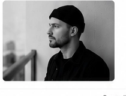

Обо мне / APUSKO
Мой путь в монтаж
Я пришел к монтажу через режиссуру, операторскую работу и продюсирование. Поэтому смотрю на материал не только как на набор кадров, а как на будущую историю: с линией, ритмом, атмосферой и ощущением зрителя.
Обо мне / APUSKO
Я пришел к монтажу через режиссуру, операторскую работу и продюсирование. Поэтому смотрю на материал не только как на набор кадров, а как на будущую историю: с линией, ритмом, атмосферой и ощущением зрителя.

Здесь не хронология ради хронологии, а несколько опор, которые объясняют, почему я работаю с монтажом именно как с режиссурой смысла.
История, герой, конфликт
Режиссура дала мне привычку думать не только сценами, а всей историей: кто герой, что меняется, где напряжение и зачем зритель идет дальше.
Почему монтаж
На съемке можно почувствовать человека и место. В режиссуре — понять, какую историю хочется рассказать. В продюсировании — увидеть весь проект целиком. Но именно в монтаже все это проходит проверку: что действительно работает, что держит внимание, где появляется дыхание, а где материал начинает рассыпаться.
Мне интересно работать с документальными, travel и длинными YouTube-форматами именно поэтому: в них много живого и непредсказуемого. Там нельзя просто собрать красивую последовательность. Нужно найти внутреннюю логику, не потерять человека внутри кадра и собрать форму, которая будет понятной зрителю.
Меня сформировали
На этой странице я не дублирую все кейсы и продукты. Здесь только точки, через которые можно лучше понять мой взгляд: документальные работы, разборы кино и разговор о профессии.